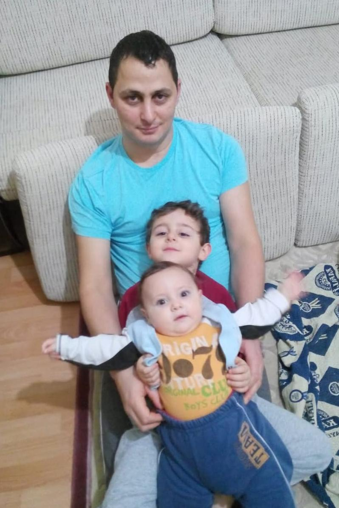
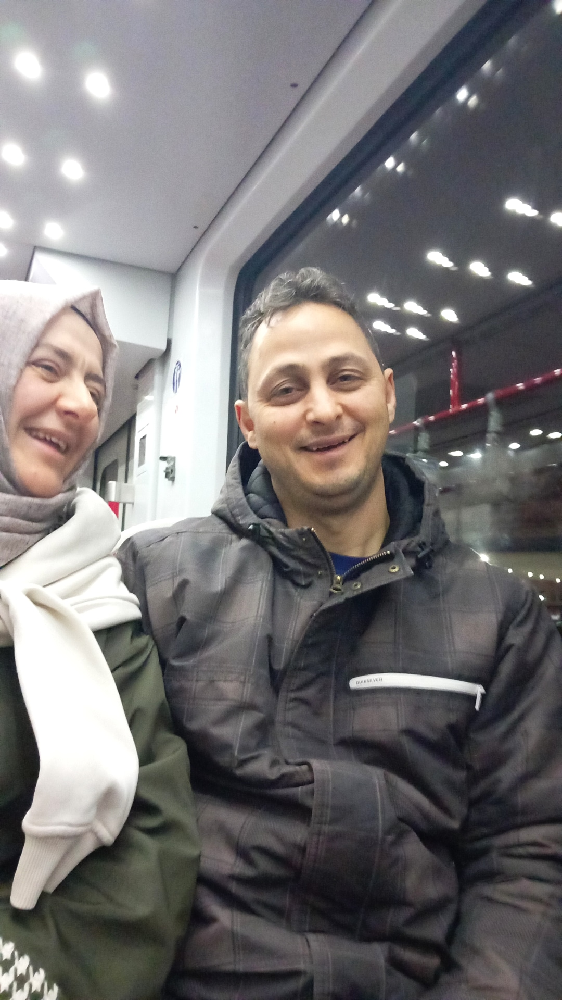
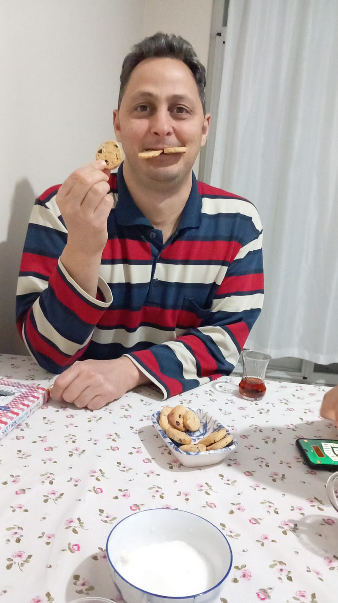

Bana hayatı öğreten, her düştüğümde elimden tutan canım babama özel küçük bir dijital hatıra...



Hayatta ne zaman kaybolsam, senin tecrüben ve bilgeliğin her zaman bana doğru yolu gösterdi.
Dünyada ne olursa olsun, arkamda kapı gibi senin durduğunu bilmek bana en büyük gücü veriyor.
Sadece bir baba değil, aynı zamanda birlikte en çok güldüğüm,en saçma ama komik esprileri olan sana kocaman teşekkürler.
Bilal ve annemi evde bırakıp sadece ikimiz köye gidip kışın çangalları balta ile bana yapmayı öğrettiğin gün.
O gün gözlerindeki o "Bu çocuk artık büyüdü" dediğini görmek, benim için en büyük gurur duygusu oldu.
Daha birlikte biriktireceğimiz çok anı var. İyi ki varsın!
Bu siteyi gezerken senin sevdiğin o şarkı çalsın istedim...